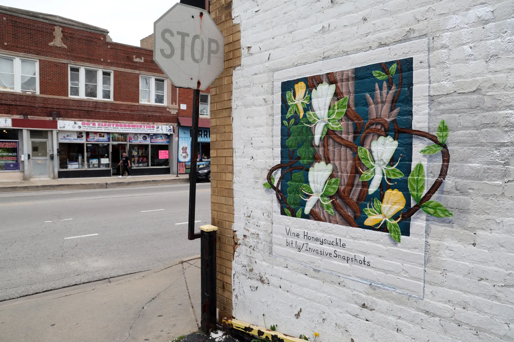
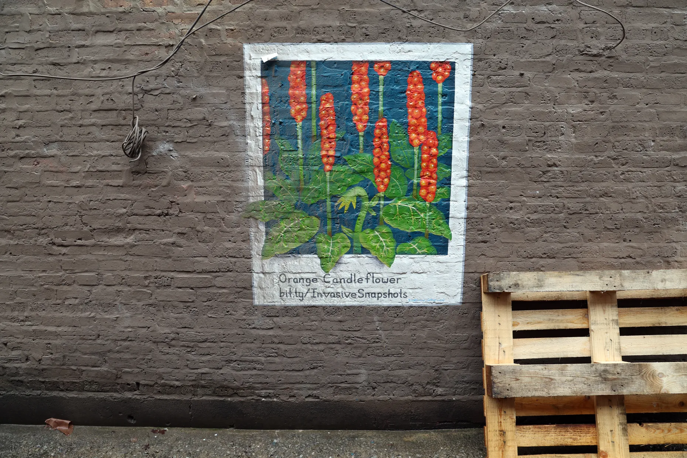
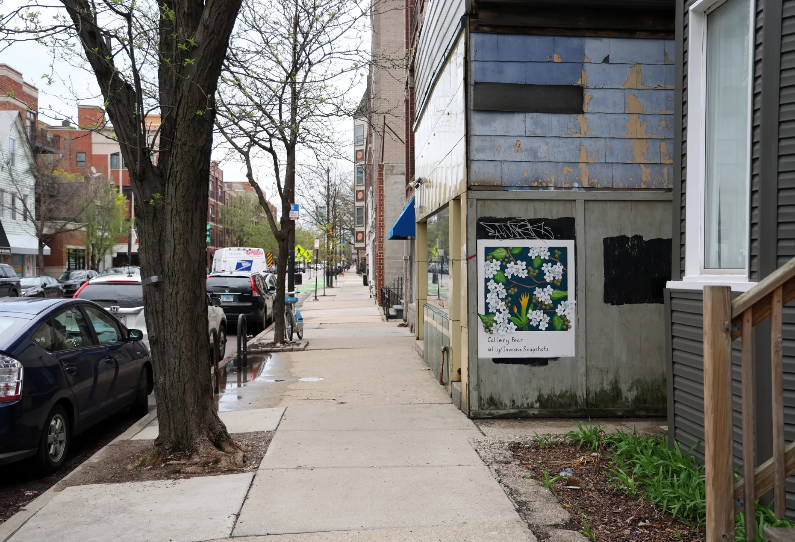
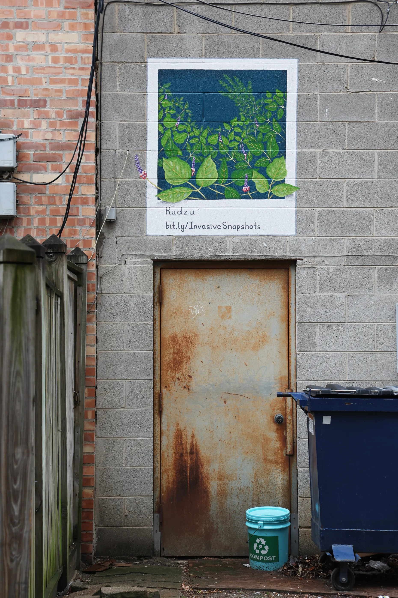

External Press · Field Dispatch No. 01
UIC researchers use mural art to raise awareness of invasive plant species.
Nine polaroid-style murals, taped to Chicago’s alley walls and corner stores, turn kudzu, Callery pear, and vine honeysuckle into a street-level field guide — and make an ecological emergency impossible to walk past.
Original reporting
Madeline King
Chicago Tribune
Published
April 24, 2026
Photographs
Terrence Antonio James
Chicago Tribune
Summary by
Water Street Studios
Public Art Initiative

Walk the right block in Wicker Park, North Center, or any number of Chicago’s North and West Side neighborhoods and you will catch, at viewing height, a small painting taped to an alley wall — Orange Candleflower, Callery Pear, Kudzu, Vine Honeysuckle. They look like oversized polaroids. They are, in fact, a research lab.
The nine murals, completed in October, were commissioned by the MEC Lab — the macroscale ecology and conservation lab at the University of Illinois Chicago. Each one depicts an invasive plant already damaging Midwest ecosystems, or threatening to. Each one is three feet by four feet. Each one carries a link to bit.ly/InvasiveSnapshots, where passersby can read up on the species, learn how to identify it, and find out what to do if it shows up in their yard.

Gabriela Nunez-Mir, the MEC Lab’s director and principal investigator, told the Tribune she wanted the murals to do something a data dashboard cannot: make invasive species emotional, memorable, beautiful — and therefore harder to ignore.
“They’re beautiful; they really are. And they can do positive things, but read closely because there’s a lot of negative impacts they can have as well.”
The mural project is part of a larger body of work the lab is building with a $300,000 Biota Award from the Walder Foundation. The bulk of that grant went toward a database of more than 1,000 invasive plant species, each assessed against the same 28 characteristics — the first step toward predicting which species might be the next Midwest invaders before they arrive. The database, led by researcher Sofia Al-Shayeb, is forthcoming in the Journal of Ecology and designed to be usable by experienced ecologists and elementary-school classrooms alike.
The murals are the database’s public face. Painter Laura Catherwood — a longtime Humboldt Park artist whose practice centers on the natural world — was commissioned through VSG Contemporary in River West. She placed the paintings deliberately at viewing height.
“I hope it encourages people to notice the things that are growing around them.”


Each species on the wall carries a species page on the project site, written by the lab’s manager and research associate Clover McDougall. The pages explain how to identify the plant, what damage it does, and — crucially — what an ordinary person can do about it. For a species like the orange candleflower, McDougall told the Tribune, the instruction is as simple as pulling it up and disposing of it properly.
That is the theory of change: a painted wall makes you curious, the URL gets you to the data, and the data turns an afternoon walk into an act of ecological stewardship. The wall is the front door.
Why we shared this
A painted wall is civic infrastructure.
UIC’s invasive-species murals are, on their surface, a piece of science communication. Look closer and they make the same argument the Water Street Public Art Initiative is making in Batavia — that a mural is not decoration. It is a tool. It can carry research, protect an ecology, explain a neighborhood to itself, and outlast any press release.
A mural about kudzu on a Chicago alley wall, a mural about the Fox River on Batavia limestone, a mural about the Fabyan windmill on a corridor building — these are the same argument made in different species. Public art is a tool for public understanding, and the cities that invest in it are inviting their residents to notice what is growing around them.
We are paying attention to UIC’s work because it validates our own thesis: when a piece of art is placed deliberately, at viewing height, on the walk home — it changes what a neighborhood knows.
Original reporting
This is a summary. The full story — with additional quotes, context, and reporting — lives at the Chicago Tribune.
By Madeline King · Chicago Tribune · April 24, 2026
Photographs by Terrence Antonio James / Chicago Tribune